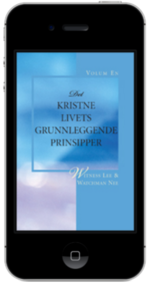

★ Aktuelt studie
Den herlige menigheten
En kapittel-for-kapittel studie av Den herlige menigheten av Watchman Nee.
Boken utforsker Guds syn på menigheten gjennom Bibelens bilder og viser menighetens plass i Guds evige hensikt.
Åpne studietEt voksende bibliotek med bibelstudier, studiegrupper, bøker, videoer og undervisningsressurser som hjelper deg til å forstå Guds ord dypere.
★ Aktuelt studie
En kapittel-for-kapittel studie av Den herlige menigheten av Watchman Nee.
Boken utforsker Guds syn på menigheten gjennom Bibelens bilder og viser menighetens plass i Guds evige hensikt.
Åpne studietStudier bygget rundt kristne bøker. Hvert studie inneholder presentasjoner, kommentarer og materiale brukt i Zoom-grupper.

Det kristne livets grunnleggende prinsipper – Volum 1Watchman Nee og Witness LeeLegger et bibelsk fundament for det kristne livet og sentrale erfaringer i troen. Det kristne livets grunnleggende prinsipper – Volum 2Watchman Nee og Witness LeeHandler om å vokse dypere i relasjonen til Gud og erfare Kristus i hverdagen.Anbefalte bøker innen bibelteologi, apologetikk, kirkehistorie og kristenliv.
Bibelundervisning, konferanser, debatter og dokumentarer.
Lytt til bibelundervisning fra pålitelige kristne forkynnere.
Kart, tidslinjer, bibelordbøker, leseplaner og oversikter.
Alt til Guds ære og til oppbyggelse av Kristi kropp.1. Korinter 10,31